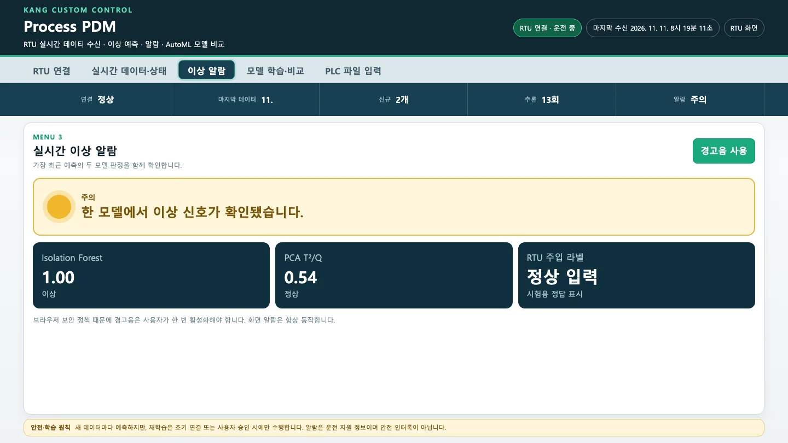
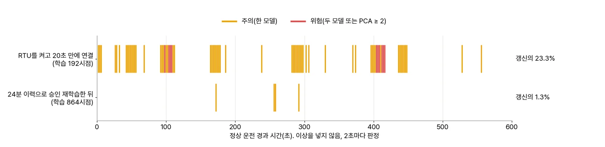
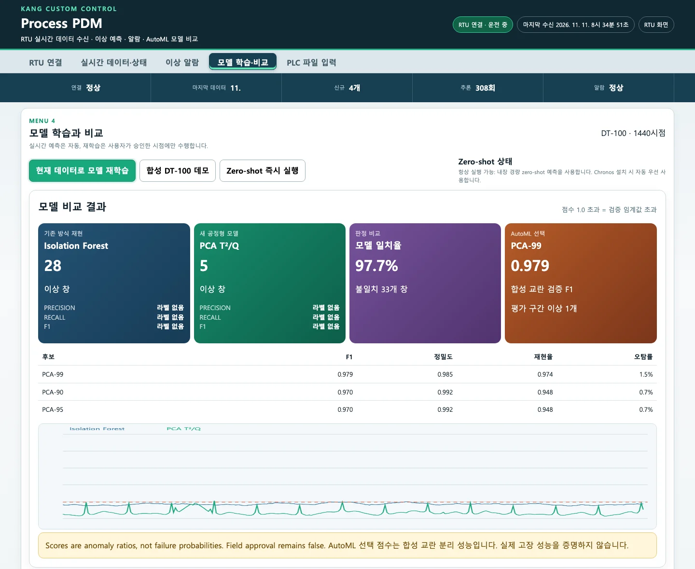
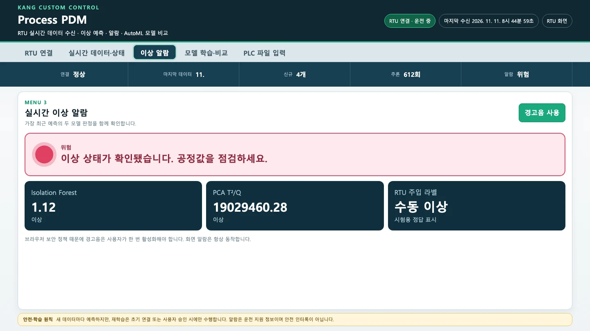
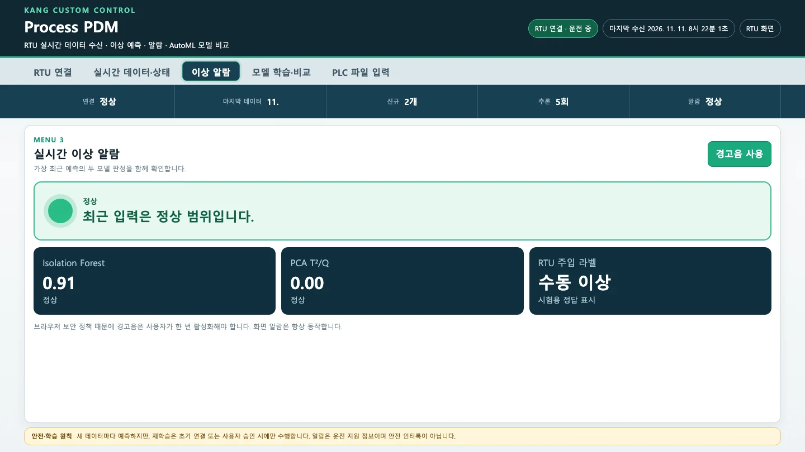

PDM은 「RTU 연결 + 초기 학습」과 「현재 데이터로 모델 재학습」을 누르는 순간의 이력 전체로 학습합니다. 그래서 그 순간 이력에 어떤 데이터가 들어 있는지가 결과를 결정합니다. 너무 일찍 학습하면 정상 운전 중에도 알람이 잦고, 이력에 이상이 섞인 채로 학습하면 이상을 놓칩니다. 세 가지 실험으로 이를 확인하고 올바른 순서를 정리합니다.
무엇을 · 왜#
배포본은 자동으로 재학습하지 않습니다. 이상 데이터를 정상으로 학습하지 않도록 설계한 것입니다. KANG 판의 30시점 자동 재학습에서 열화를 정상으로 학습한 문제를 피하기 위한 선택입니다. 하지만 두 학습 시점에는 이력 전체를 시간 순서대로 60·20·20으로 나눠 씁니다. 학습 구간을 선택하는 입력 칸은 없습니다.
| 구간 | 쓰임 | 여기에 이상이 섞이면 |
|---|---|---|
| 앞 60% 학습 | 표준화, Isolation Forest, PCA를 맞춥니다 | 표준화와 주성분이 이상값에 끌려가 정상 운전의 움직임을 제대로 배우지 못하고, 임계값도 낮아집니다. 헛알람이 늘어납니다 |
| 다음 20% 검증 | 임계값(점수의 99% 지점)을 정합니다 | 임계값이 수천만~수억으로 올라 이상을 거의 못 잡습니다 |
| 마지막 20% 평가 | AutoML 「평가 구간 이상」 수만 셉니다 | 판정에는 영향이 없습니다 |
6장에서 같은 파일의 이상 위치만 바꿔 이를 확인했습니다. 여기서는 RTU를 실시간으로 연결해 세 가지 상황을 살펴봅니다. 수치는 재생 도구(2초마다 판정, 프로그램 수정 없음)로 측정했고, 실제 화면에서도 같은 순서로 진행했습니다.
실험 1. 너무 일찍 학습하면: 정상 운전 중의 헛알람#
2장처럼 RTU를 켜고 20초 만에 연결하면 학습 192시점, 검증 64시점으로 학습합니다. 이상을 넣지 않고 30분 동안 지켜보았습니다.
| 구간(연결 뒤) | 「주의」「위험」이 뜬 갱신 | 그중 「위험」 | 켜진 횟수 |
|---|---|---|---|
| 0~10분 | 23.3% | 10번 | 19번 |
| 10~20분 | 26.0% | 7번 | |
| 20~30분 | 20.0% | 18번 |
30분 동안 알람이 45번 켜졌다 꺼졌습니다. 아래는 실제 화면에서 이상을 넣지 않았는데 「주의」가 뜬 순간입니다. RTU 주입 라벨은 「정상 입력」이고 기존 방식 점수가 1.00(임계값을 아주 조금 넘음)입니다.

원인은 학습 데이터에 정상 운전의 한 주기조차 온전히 담기지 않은 데 있습니다.
- RTU의 느린 파형은 주기가 약 151초이고, 레벨은 120초마다 톱니처럼 되돌아갑니다. 검증 64시점(64초)은 느린 파형 주기의 절반도 되지 않습니다. 레벨이 되돌아가는 순간도 많아야 한 번만 관측하며, 이때 느린 파형의 위상도 하나뿐입니다.
- 임계값은 검증 창 45개 가운데 99% 지점의 값으로, 사실상 가장 높은 값입니다. 검증 때 보지 못한 위상이 오면 정상인데도 임계값을 넘습니다.
- 실제로 PCA의 알람은 레벨이 되돌아간 직후 몇 초~십수 초 동안에 집중되었습니다(T²가 넘음). 기존 방식의 알람은 다른 위상에서 발생했습니다.
이력이 24분(1,440시점, RTU가 보관하는 최대)까지 쌓인 뒤 학습하면 학습 864 · 검증 288시점이 됩니다. 결과가 크게 달라집니다.
| 언제 학습했나 | 학습 · 검증 | 정상 운전 10분 동안 알람이 뜬 갱신 | 「위험」 |
|---|---|---|---|
| RTU를 켜고 20초 뒤 연결 | 192 · 64 | 23.3% | 10번 |
| 24분 뒤 연결 | 864 · 288 | 1.3%, 다음 10분 0.3% | 0번 |
| 20초 뒤 연결 → 20분 뒤 승인 재학습 | 864 · 288 | 1.3%, 다음 10분 1.0% | 0번 |

실제 화면에서도 같은 순서로 확인했습니다. RTU를 초기화하고 20초 뒤 연결한 다음, 「이상 알람」을 2초마다 300번(10분) 확인했습니다. 그다음 이력이 1,440시점까지 찼을 때 현재 데이터로 모델 재학습을 누르고 다시 300번 확인했습니다.
| 모델 | 300번 가운데 「주의」 | 「위험」 | 알람 비율 |
|---|---|---|---|
| 연결 직후 학습한 모델 | 71 | 7 | 26.0% |
| 1,440시점으로 승인 재학습한 모델 | 4 | 0 | 1.3% |

재학습한 모델에 같은 수동 이상(화면 기본값)을 넣자 2.3초 만에 「위험」이 떴습니다(IF 1.12, PCA 19,029,460). 헛알람을 줄였다고 이상을 놓치지는 않았습니다.

이 화면 확인은 두 배 빠르게 흘렀습니다
이 화면을 확인할 때는 RTU를 초기화한 직후 바로 운전을 시작해 2장 경고의 「1초에 두 시점」 상태가 되었습니다. 그래서 1,440시점이 24분이 아니라 약 11분 만에 찼습니다. 시점 수를 기준으로는 같은 실험이고, 알람 비율도 재생 도구의 결과(23.3% → 1.3%)와 거의 같았습니다.
실험 2. 이상을 먼저 넣고 연결하면#
교육 자료(PPT 10·17쪽)의 실습 순서는 「RTU에서 이상값 입력 → PDM에서 RTU 연결 + 초기 학습」입니다. 이 순서를 그대로 따라 했습니다.
-
RTU에서 「이력 초기화」를 누르고(정상 300시점, 정지), 「운전 시작」을 누릅니다.
-
바로 「수동 이상 적용」(화면 기본값)을 누르고 약 2분 기다립니다.
-
PDM에서 「RTU 연결 + 초기 학습」을 누르고 「이상 알람」을 엽니다.

이상을 129초 넣은 뒤 연결한 이상 알람. RTU 주입 라벨은 수동 이상인데 Isolation Forest 0.91 정상, PCA 0.00 정상, 알람 정상
RTU는 여전히 이상값(온도 145 °C …)을 내보내고, 라벨도 「수동 이상」입니다. 그런데 두 모델 모두 「정상」입니다. 「모델 학습·비교」에서도 이상 창이 IF 0, PCA 0이고, AutoML은 IsolationForest-200(F1 0.194)을 골랐습니다.
재생 도구로 이상이 지속되는 시간을 바꿔 보면 경계를 확인할 수 있습니다.
| 연결 전 이상 길이 | 연결 때 이력 | 이상이 들어간 구간 | PCA 임계값(T² / Q) | 이상 동안의 알람 |
|---|---|---|---|---|
| 40초 | 360시점(학습 216 · 검증 72 · 평가 72) | 평가 구간(321~360번째)에만 | 18.9 / 12.6 | PCA만 「위험」 100%, 기존 방식은 끝까지 없음 |
| 120초 | 440시점(학습 264 · 검증 88 · 평가 88) | 검증 구간의 끝 32시점 + 평가 구간 | 50,350,831 / 275,317,727 | 한 번도 없음 |
120초일 때는 이상이 검증 구간에 걸쳤습니다. 그 결과 임계값이 수천만~수억으로 올라갔습니다. 학습한 순간부터 이 모델은 이 정도 이상을 「평소의 1% 안」으로 봅니다. 그 뒤 이상을 계속 넣어도 알람이 나지 않습니다. 40초일 때는 이상이 평가 구간에만 있어 PCA가 잡았습니다. 기존 방식은 끝까지 1.0을 넘지 못했습니다(최대 0.98). 연결 순간에 창이 이미 이상값으로 꽉 차 있어 「변화」를 보지 못한 것으로 보입니다.
배포본 문서 04_USER_MANUAL의 순서(먼저 「RTU 연결 + 초기 학습」, 그다음 RTU에서 수동 이상)가 맞습니다.
실험 3. 승인 재학습의 함정#
「현재 데이터로 모델 재학습」은 사람이 눌러야만 동작합니다. 그래도 누르는 순간의 이력으로 학습한다는 점은 같습니다. 이상을 넣었다 뺀 지 1분 만에 재학습을 누르면 어떻게 될까요?
| 단계 | 재생 도구 결과 |
|---|---|
| 연결(320시점)하고 2분 뒤 이상 60초 → 복귀 | 이상 동안 두 모델 모두 2초 만에 이상, 「위험」 100% |
| 복귀 1분 뒤 재학습(560시점, 이상 60시점 포함) | PCA 임계값 T² 41,505,364 / Q 249,662,609 |
| 2분 뒤 같은 이상 30초 | 기존 방식 끝까지 없음(최대 1.00), PCA 「주의」 60%(최대 1.06), 「위험」 0% |
재학습 전에는 2초 만에 「위험」으로 표시되던 이상이 재학습 뒤에는 겨우 「주의」로 깜박입니다. 이상 60시점 가운데 일부가 검증 구간에 들어갔기 때문입니다.
반대로 정상 이력만으로 재학습하면(연결 15분 뒤, 이상이 한 번도 없던 1,220시점) 같은 이상을 2초 만에 「위험」으로 잡고, 복귀 18초 뒤에 알람이 꺼집니다.
영상에서는 RTU 이력이 1,440시점으로 채워진 상태에서 이상 실험을 마치고 7분 뒤에 재학습했습니다. 그사이 이상은 이력의 검증 구간으로 이동해 있었습니다. 같은 이상을 다시 넣자 두 모델 모두 30초 동안 「정상」으로 판단했습니다. 위 표의 재생 결과(PCA 「주의」 60%)보다 나쁜 결과입니다.
재학습 버튼을 누르기 전에
「실시간 데이터·상태」의 「수동 이상」이 0개인지 확인하세요. RTU는 최근 1,440시점만 보관하므로, 이상을 넣었다면 24분이 지나야 이력에서 빠집니다. 급하면 RTU의 「이력 초기화」를 누른 뒤 「운전 시작」을 누르고 정상 이력이 쌓이기를 기다립니다. 현장에는 이런 라벨이 없습니다. 운전 일지, 알람 이력, 운전 모드 태그로 「최근에 이상·정지가 없었다」는 것을 확인하는 규칙이 필요합니다(7장 과제 D).
정리: 이 프로그램을 학습시키는 순서#
- RTU(또는 PLC)가 정상 운전 중일 때 연결합니다.
- 정상 이력이 충분히 쌓일 때까지 기다립니다. 이 RTU에서는 24분(1,440시점)이었습니다. 현장이라면 운전 모드마다 몇 주가 필요합니다.
- 「수동 이상 0개」를 확인하고 현재 데이터로 모델 재학습을 누릅니다.
- 그다음에 이상 실험을 합니다.
- 실험이 끝나면 이상이 이력에서 빠질 때까지(24분) 재학습하지 않습니다.
확인 문제#
-
수업 시작 직후 RTU와 PDM을 켜고 바로 연결했더니, 학생들 화면에 「주의」가 자꾸 깜박입니다. 무엇이 문제이고, 수업 진행을 어떻게 바꾸면 될까요?
정답
학습 데이터가 3분 남짓(학습 192 · 검증 64시점)이라 정상 운전의 한 주기조차 온전히 담지 못했습니다. 그래서 임계값이 너무 낮게 잡혔습니다. 이번 실행에서는 정상 운전 중에도 갱신의 20~26%에서 알람이 났습니다. RTU를 수업 전에 미리 켜 두고(24분 이상), 연결하거나 「현재 데이터로 모델 재학습」을 한 번 누른 뒤 실습을 시작합니다. 이렇게 하자 헛알람이 1% 안팎으로 줄었습니다.
-
교육 자료 순서대로 이상을 2분 넣고 연결했더니 알람이 전혀 나지 않습니다. 학생이 「PCA는 이상을 못 잡는 모델」이라고 결론 냈습니다. 맞나요?
정답
아닙니다. 이상이 검증 구간에 들어가 임계값이 수억 단위로 올라갔기 때문입니다. 모델이 아니라 학습 순서의 문제입니다. 정상일 때 먼저 연결하고 그다음 이상을 넣으면 같은 이상을 2초 만에 잡습니다. 이상이 40초뿐이라 평가 구간에만 들어간 경우에도 잡았습니다.
-
이상 실험을 마치고 1분 뒤 「재학습은 사람이 승인할 때만 하니 안전하다」며 재학습을 눌렀습니다. 무엇이 문제인가요?
정답
재학습은 누르는 순간의 이력 전체로 합니다. 이력에 방금 넣은 이상이 남아 있어 학습·검증 구간에 들어갑니다. 이번 실험에서는 재학습 뒤 같은 이상을 기존 방식이 전혀 못 잡았고, PCA도 60%에서만 「주의」를 표시했습니다. 승인 방식은 「언제 누를지」를 정하는 규칙이 있어야 안전합니다. 예를 들면 「수동 이상 0개」, 「최근 24분 동안 이상·정지 없음」 같은 규칙입니다.